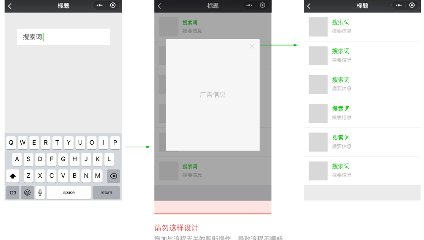

在小程序的设计和开发阶段，我们希望开发者始终将优秀的用户体验作为产品目标之一，通过积极的用户体验和设计评估，在不断的迭代中完善用户体验，用心打磨小程序，从而更好实现产品价值，激发用户正向情感。因此，我们建议小程序在开发过程中以及发布之前，开发者务必对自身产品的体验和设计做全面走查。
开发者可依据以下9点基础设计原则，对小程序的体验进行评估。
1. 导航清晰
导航是确保用户在网页中浏览跳转时不迷路的最关键因素。导航需要告诉用户，当前在哪，可以去哪，如何回去等问题。开发者在小程序的设计中，应确保各个页面之间层级清晰明确。每个界面的导航，都指向清晰，有路可退，实际应用样例请参考图5-4。
图5-4 不同页面之间应保持明确的导航层级
2. 流程明确
为了让用户能够顺畅地使用小程序，用户进行操作时，应确定当前页面只设置了单一任务，且不出现目标流程之外的内容。此举有利于让用户明确当前操作的目的，从而集中精力聚焦当前任务，并通过简单操作达到结果。在图5-5中，出现了目标流程之外的操作，使用户体验受阻。

图5-5 出现目标流程之外的操作而打断用户的体验
3. 重点突出
每个页面都应有明确的重点，以便于用户每进入一个新页面的时候都能快速理解页面内容。在确定过了重点的前提下，应尽量避免页面上出现其它与用户的决策和操作无关的干扰因素。图5-6以搜索功能作为案例说明，突出的搜索入口以达到重点突出，操作明确。图5-7对比了有主次之分的按钮排列与平级按钮排列的效果，有主次之分的视觉展示能让操作决策更快速。

图5-6 案例说明：搜索功能

图5-7 案例说明：多按钮情况
4. 符合预期
对用户友好的产品，需要在其设计阶段便将自身信息架构和模型与用户的心理模型匹配，以便于用户能够依据以往的使用经验或其他生活经验，降低使用的理解和学习成本，从而快速达成使用目的。
5. 等待与反馈
在用户使用产品时，往往页面过长时间的等待会引起不良情绪。在不得不需要用户以一定的加载等待时间作为代价时，我们需要用明确的等待状态告知用户，以舒缓用户在等待时期的不良情绪。图5-8是不同的加载样式举例。
在设计加载等待状态时，应注意以下事项：
若载入等待时间较长，应提供取消操作，并使用进度条显示载入的进度；
载入过程中，应保持动画效果；无动画效果的加载很容易让人产生该界面已经卡死的错觉；
不要在同一个页面同时使用超过1个加载动画。

图5-8 加载样式举例：标题栏加载、Toast加载、按钮加载
此外，对于用户的操作结果，小程序也需要给出明确的结果反馈，以增强用户的操作信心和控制感。开发者可以根据实际情况，选择不同的反馈样式。例如，
对于页面局部的操作，可在操作区域予直接反馈。
对于页面级别的操作结果，可使用弹出式提示、模态对话框或结果页面展示。具体示例如图5-9所示。

图5-9 提示样式举例：图标弹出提示、文字弹出提示、对话框
6. 异常处理
在设计任务和流程时，往往用户会因为各种原因导致操作失败。此类异常场景往往是用户最为沮丧和需要帮助的时候，因此，要注意在异常状态下的设计。在出现异常的时候需要给予用户清晰的状态提示，并告知解决方案，使其有路可退。
上文提到的模态对话框和结果页面都可以作为异常状态的提醒方式。除此之外，在表单项较多的页面中，应明确指出出错项目，以便用户修改，如图5-10所示。

图5-10 表单异常提醒
7. 内容和文案准确友好
在产品通过文案或者页面表达内容时，需要斟酌使用的内容和文案。
使用的语言应当简洁，礼貌并容易被用户理解。此外，
还要注意专业术语需要被清楚解释，
特有词汇全局需用统一的特定表达，
重要内容能够被快速获取，
且页面不存在无关文案干扰用户决策。
8. 和谐统一
小程序内的设计风格应该是统一、和谐且具有延续性的，这样才能确保用户建立完整的产品品牌认知，更好地辨析不同的小程序。
9. 平台适配
在小程序的设计过程中，应该充分考虑iOS与Android平台不同的设计规范，对设计进行适当调整以适应不同平台上的用户使用习惯。
设计文档内容将不断进行修改、完善并更新，可以查看线上资讯[4]获取最新小程序信息。